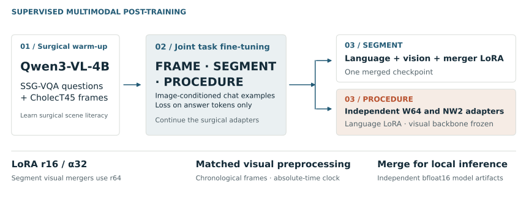
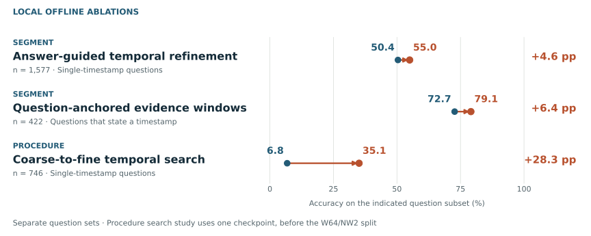

I adapted Qwen3-VL-4B to surgical foreign-object question answering,
then built a temporal search policy that spends frames where the question
needs them. The result is two complementary, fully local inference systems.
Divyanshu MishraDeveloped independently under the team name “Incision Impossible”
Short segments need precise local evidence; hour-long procedures need a
search strategy. Both repositories share the surgical adaptation recipe,
answer-format constraints, and absolute-time frame overlays.
01 / DISCOVR-SEGMENT
Short-video reasoning
One merged checkpoint answers segment questions. A predicted timestamp
triggers a second look within ±15 seconds; timestamps stated in a
question guide ±30-second evidence windows.
1 checkpoint64 frames per passVision + language LoRA
W64 supplies a broad event pointer. NW2 refines it twice and answers
other questions. Models load sequentially to fit the validation GPU;
needle reappearance uses four post-anchor presence checks.
I constructed surgical scene-literacy data from SSG-VQA and CholecT45,
continued the adapters on joint FRAME, SEGMENT, and PROCEDURE supervision,
and merged each selected adapter into its own bfloat16 model.

Shared training design, distinct checkpoints. Segment adapts visual components
as well as language; Procedure uses language LoRA with the vision encoder frozen.
Join surgical QA to source frames, de-duplicate records, normalize formats,
and represent each example as image-conditioned chat.
Train the answer, not the prompt
Apply supervised cross-entropy to answer tokens, masking the system
instruction, question, padding, and visual placeholders.
Match training and serving
Use chronological frames, a 768-pixel longest-side cap, and absolute
video timestamps throughout temporal training and inference.
Training loss was monitored with row-random splits, so it is not a video-disjoint
generalization estimate. This project uses supervised fine-tuning; the temporal
search policy is deterministic.
02 / Inference
Answer. Then zoom in.
A uniform pass can miss a brief event in a long video. I used the first
prediction as a pointer, then resampled near it. Narrowing the interval
improves temporal resolution with a bounded frame budget.
Explore the Procedure search
Illustrative 60-minute video
128frames in this pass
28.3 sbetween observations
W64active checkpoint
W64 scans the complete procedure; NW2 then refines inside 1,200-second and
100-second windows. Only one model is resident at a time.
The search uses predicted timestamps to select evidence. Gold timestamps are
used for evaluation, and the selected frames always keep the absolute video clock.
03 / Experiment design
Measure each decision separately.
These ablations ask whether changing evidence placement improves timestamp
answers. Each row is a separate local study with its own question subset
and checkpoint context.

Local offline accuracy on the indicated subsets. The Procedure result isolates
the three-pass search with one checkpoint, before the later W64/NW2 split.
These subset results are not overall challenge scores, and the gains should
not be added. The recorded challenge pre-evaluation values are shown separately below.
Challenge pre-evaluation · recorded in the released provenance
I released the merged checkpoints, inference code, method descriptions,
and container tooling. The public source can be reviewed and tested on
CPU before running a full GPU smoke test.
Traceable model artifactsPinned Hugging Face revisions, SHA-256 checks, and preserved submission records.
Bounded GPU memoryProcedure runs W64 and NW2 in separate phases, with one model resident at a time.
Defensive batch executionOrdered atomic output, isolated question failures, and visible setup or write failures.
Checks that can run without a GPUFormat, routing, batch I/O, and release-integrity regressions, plus lint and shell checks.
Read the code and methods.
Each track remains independently buildable. This page connects the common
design and the evidence behind both releases.
This is a research challenge release. Dataset access remains subject to the
original terms; patient videos and raw challenge annotations are not distributed.
The repositories provide inference artifacts and documented training recipes;
complete training scripts and manifests are not included.